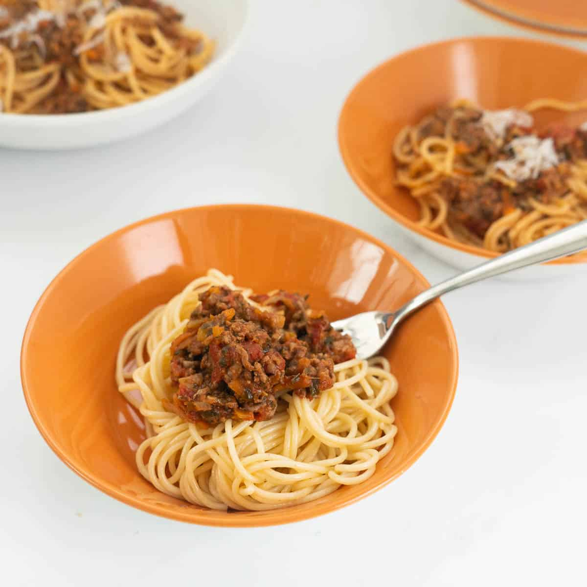

Veggie Loaded Spaghetti Bolognese

Veggie loaded Spaghetti Bolognese full of nutrition from both beef and veggie content
Ingredients
- Spaghetti pasta
- Onion
- Tinned tomatoes
- Tomatoe paste
- Carrot
- Zucchini
- Beef mince
- Spinach
- Garlic & onion powder herbs
- Mushrooms
Step-by-step instructions
- Grate the carrot, zucchini and mushrooms
- Finely dice the onion, you can choose to grate the onion as well
- In a large pan heat 2 tablespoon of olive oil. Sauté the onion, grated carrot, and zucchini until softened and starting to go golden
- Add the tomato paste, sauté for 2-3 minutes this helps deepen the flavour
- Add the mince and the mushrooms, cook until the beef mince is browned
- Add the tinned tomatoes, dried herbs and spinach.
- Simmer for 25-30 mins until everything is well cooked, the sauce has thickened and flavourful While the spag bol is simmering cook your chosen pasta as per the packet directions
- Serve with cooked pasta